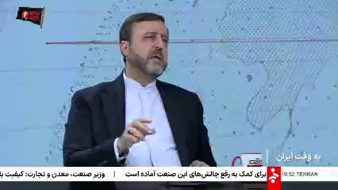
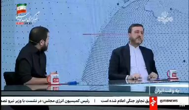
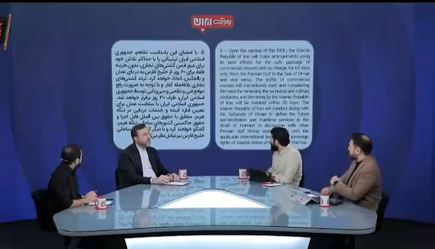
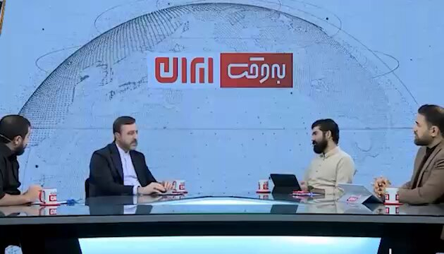

@Tasnimnews_Fa
📝 原文: Deputy Legal Adviser of the Foreign Ministry: If the Strait of Hormuz returns to its pre-war status, our success in the war will not be complete
Every European warship that approaches the Strait is a legitimate target for us
The Strait of Hormuz is part of security and a
🇨🇳 译文: 外交部副法律顾问：如果霍尔木兹海峡恢复到战前状态，我们的战争胜利将不完整
每一艘接近海峡的欧洲军舰都是我们的合法目标
霍尔木兹海峡是安全的一部分





🕒 2026-07-28T17:00:25+00:00